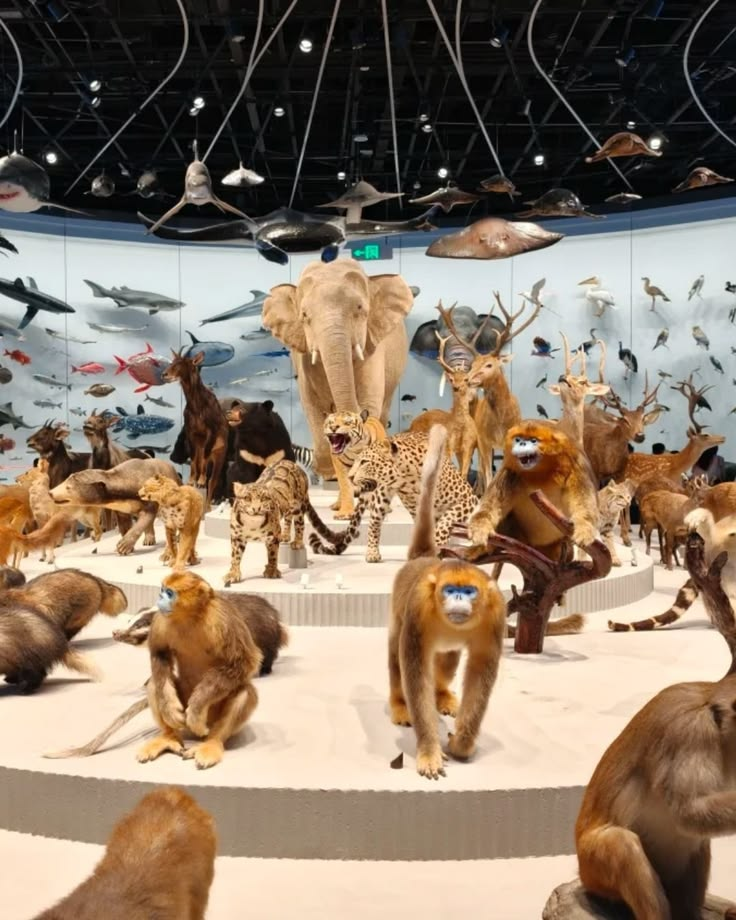

Digital Resources

You do not need to visit in person to explore our heritage. The resources below are available online, anytime.
E-Books & Publications
Digitised museum catalogues, exhibition booklets and local history publications available for online reading.
Digitised Photograph Archive
Browse thousands of scanned historical photographs, searchable by year, subject and location.
Virtual Tours
360-degree virtual walkthroughs of our permanent galleries and current exhibitions.
Digital Repository
An open-access repository of research papers, oral history recordings and archived records related to our region.
How to Access Digital Resources
- Visit the relevant section above.
- Some materials are freely accessible; others require a free reader account.
- For research-related access, contact our Research Support team.
See also our Useful Links page for links to national digital heritage repositories.